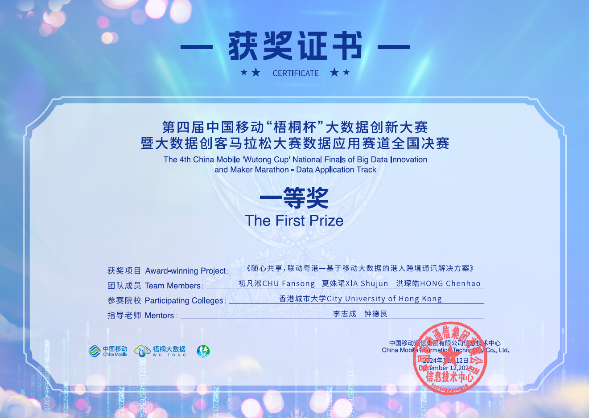

Hi! I'm a CS junior at City University of Hong Kong. I'm privilleged to be advised by Prof. Antoni Chan and Ms. Chenyang Zhao of VISAL Lab.
I'm currently applying for the 2025 summer research internship!
Previously, I have conducted research on explainable AI for object detection, which utilizes gradients w.r.t. feature maps to generate explanation heat maps and analyzes values in attention layer of transformer to quantify object relationships.
Explaining Object Detection through Object Relationships
Shujun Xia, Chenyang Zhao, Antoni Chan. Under review, 2024.
National First Prize in Data Application Track (Award Certificate)
The 4th China Mobile 'Wutong Cup' National Finals of Big Data Innovation Competition
HKSAR Government Scholarship Fund - Talent Development Scholarship (Award Certificate)
In Spring 2023, I participated in the Global Columbia Collaboratory. I worked with a team to create a storymap on the NGO MSK, based in Bhopal, India. Check out our storymap here.